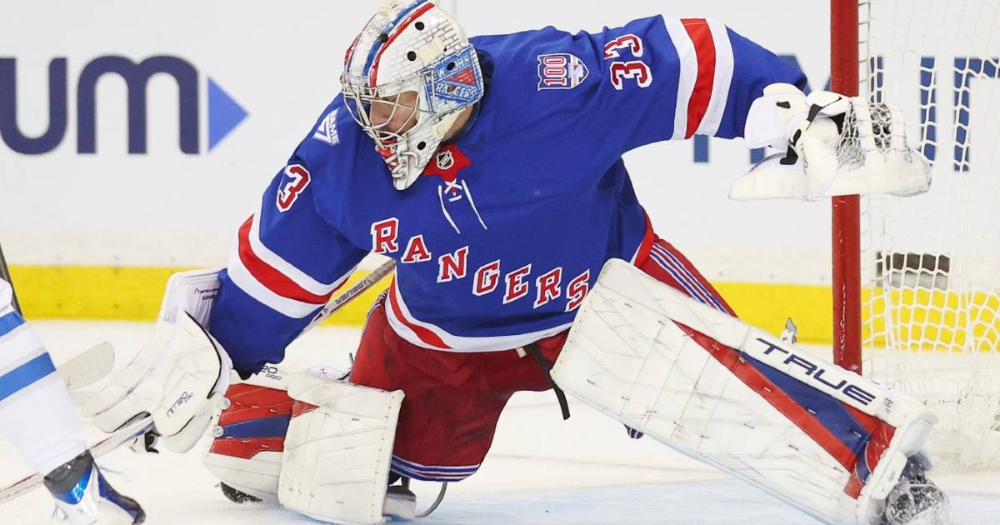

TSL Bets: Rangers -1.5 (+114) at Canucks — the worst team in the league, and a plus-money puck line
The Rangers are 11-8-1 and rolling into Vancouver, where the 3-16-1 Canucks are starting a .889 goalie. The puck line pays plus money. Take it.

The game
New York Rangers (11-8-1) at Vancouver Canucks (3-16-1) — 9:00 PM ET, Rogers Arena, Vancouver, ESPN+/MSGSN
Rangers -1.5 (+114), Canucks +1.5 (-135), Rangers moneyline -225, Canucks +185, total 6.5 (DraftKings via ESPN).
Goalies: Dylan Garand is expected to start for New York — 12 starts this season, 6-7-1, .905 save percentage, 2.48 goals-against average, one shutout. He has been the lead netminder since Igor Shesterkin went down with a season-ending injury six games into the year, and the Rangers have now alternated him with a returning Joonas Korpisalo, who backstopped Wednesday's 3-1 win in Calgary. Leevi Merilainen is expected for Vancouver — 2-8-1 with a .889 save percentage.
Injuries — New York: Shesterkin is out for the season. Korpisalo is back from the foot infection that sidelined him to start the year. Sean Durzi is unlikely to play after practicing in a red non-contact jersey on Thursday.
Injuries — Vancouver: Thatcher Demko is out with a hip injury. Filip Chytil is out with an upper-body injury. Tom Willander is day-to-day with a lower-body injury. Akil Thomas and Mackenzie MacEachern are out. The Canucks claimed defenseman Cameron Crotty off waivers on Wednesday.
Storylines: The gap between these teams is the whole bet. The Rangers have won two of three on their Pacific road trip, Mika Zibanejad has two goals and four assists in his last five games, Adam Fox leads the team with 22 points and Alexis Lafreniere leads it with nine goals. The Rangers are 11-1-0 when they score first and 0-7-1 when they give up the first goal — so the first goal matters more than usual here. Vancouver is 3-16-1, the worst record in the league, and its top performers over the last five games are Elias Pettersson with four assists and no goals, and Jonathan Lekkerimaki with three points. The Canucks' leading goal scorers, Brock Boeser and Lekkerimaki, have seven each — and the team has won three games all season.
The bet
Rangers -1.5 (+114). The moneyline at -225 is unplayable chalk, and the puck line is where the value lives: plus money on a good team against the worst team in the league, with a .905 goalie against a .889 one. The Rangers do not need a blowout — they need a two-goal win against a team that has managed three wins in twenty games. Vancouver has lost the kind of games where two goals is a lot to ask of the favorite, but the Canucks are not losing close — they are 3-16-1 for a reason, and the reason is in net and on the scoresheet.
The honest caveat
The Rangers are on the road at the end of a trip, and Garand is a rookie carrying a starter's load because the team's number one is done for the year. Vancouver is at home, closing a homestand, and bad teams win games they should not — the Canucks only need one good night from Merilainen and a first goal to flip the whole script, since the Rangers are 0-7-1 when they concede first. The puck line also needs a two-goal margin, and a 2-1 or 3-2 Rangers win still loses the bet. This is a bet on the gap being real, and the gap is real — but a one-goal game is always one bounce away.
The pick
Rangers -1.5 (+114). A $10 ticket returns about $21.40. The worst team in the league, a plus-money puck line, and a goalie mismatch.
If you or someone you know has a gambling problem, call 1-800-GAMBLER.
Sources
• NHL Slate, Odds and Analysis for November 13, 2026 (BetLegendPicks — DraftKings lines via ESPN)
• NHL Odds Today: Moneylines, Puck Lines and Totals for Every Game (Scores and Stats)
• Canucks Face Rangers on Friday Night to Close Homestand (NHL.com)
• Rangers finally finding balance in net with Joonas Korpisalo, Dylan Garand tandem (New York Post)